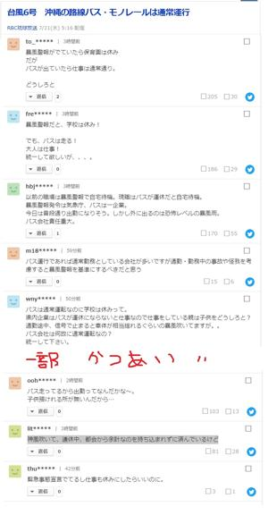

うるがいの話 ある日
最新: 暴風警報
うるがいとは 前提知識です
カニの画像をクリックすると『うるがいの話』サイトを表示します
うるがい(ｳﾙｶﾞｲ urugai)とは、『もずくがに』の名前でとても大きくなります。
たながー（ﾀﾅｶﾞｰtanagaa）とは手長えびのことで、何種類かあり大きいのは車 エビぐらいになります。
ぶながー(bunagaa)とは、赤い髪の毛、赤い身体、そして身長は１ｍ２０ｃｍ ぐらい、川の蟹を食べているの目撃された。場所は沖縄県国頭郡大宜味村のと ある村僕の隣近所に住んでいる爺さんから、聞いた話です。
2021年07月21日 (水）
暴風警報
16:44

暴風警報は昼過ぎに解除されたが、速度が遅くいまだに風は強く一日中雨であ
る。交通手段の路線バスが朝から運行しているため、会社は通常勤務扱いだろ
うとネットをみているといろいろ書き込みがあった。んん、現役の人達は大変
である。緊急事態宣言だが、感染者が昨日から百人越え、この台風は『神風吹
いて、連休中、都会から余計なのを持ち込まれずに済んでいるけど』の書き込
みのとおりかも。リアルで書き込みが増えているリンク先を載せておく。
台風６号沖縄の路線バス・モノレールは通常運行（琉球放送）のコメント一覧